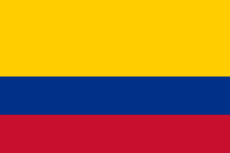

About Me
Hi, I’m Roiman Romero. I work in web development and enjoy building projects that are practical, well-designed, and easy to use. Most of my experience has been focused on frontend development, responsive interfaces, and modern web tools like Vite, Express, and APIs. I like figuring out how things work, improving details, and turning ideas into something functional. Outside of tech, I’m into superhero movies, electronic music, cooking, and traveling. I enjoy trying new recipes, discovering new places, and switching between warm beach cities and colder areas in Colombia depending on the mood. I also served a church mission in Cali, which taught me a lot about communication, discipline, and connecting with different kinds of people. In general, I’d say I’m someone who enjoys learning, staying curious, and keeping a balance between work, creativity, and experiences outside the screen.

Official Flag ofColombia
Colombia is a diverse country in South America known for its warm culture, varied landscapes, and rich traditions. It has everything from Caribbean beaches and tropical jungles to modern cities and cold mountain regions in the Andes. Colombia is also recognized for its music, coffee, food, and strong sense of community. Cities like Bogotá, Medellín, and Cartagena each offer very different experiences, which is part of what makes the country unique.